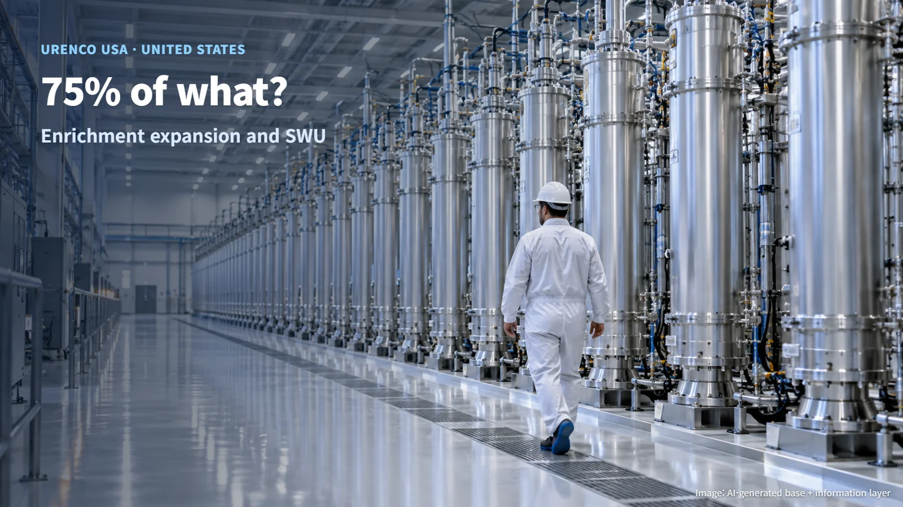
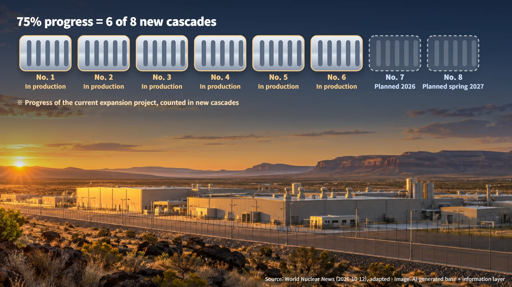
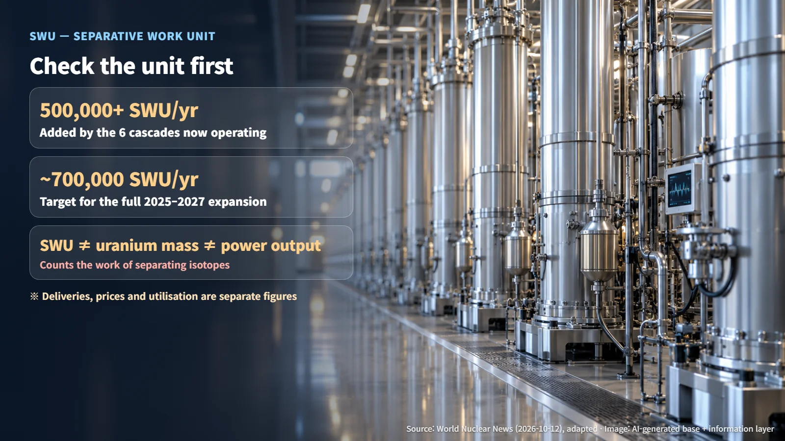

United States · Uranium Enrichment
75% of What? Reading the Urenco USA Enrichment Expansion
Urenco USA's expansion is 75% of the way through its new cascades: what that figure counts, and what an SWU measures.
A headline that says "US enrichment expansion 75% complete" can easily be read as a 75% jump in America's uranium enrichment capacity. When a single number sits in a headline, the thing it is measured against tends to slip out of view. In this case, the 75% describes the progress of an expansion project that is still under way, measured in new equipment brought into production. To see why that matters, it helps to start with what enrichment is and what SWU, the unit used to measure enrichment capacity, actually counts.

Enrichment and Cascades: Why Centrifuges Are Lined Up in Rows
Natural uranium is hard to use as nuclear power plant fuel as it comes out of the ground. It contains only a small share of uranium-235, the isotope that readily undergoes fission; almost all of the rest is uranium-238. The two are chemically almost identical and differ only very slightly in mass, so an enrichment step is needed to raise the share of uranium-235.
The method in wide use today is centrifugation. Uranium is converted into a gaseous compound and fed into cylinders spinning at very high speed. The slightly heavier uranium-238 component is pushed more strongly toward the outer wall, while the lighter uranium-235 component stays relatively closer to the centre. Think of the spin cycle of a washing machine, where water is flung outward against the drum.
The catch is that a single centrifuge produces only a tiny difference. Enrichment plants therefore connect large numbers of centrifuges in series and in parallel, passing the slightly sorted gas from one stage to the next again and again. In a typical arrangement, the stream richer in uranium-235 moves forward to the next stage, while the stream poorer in it is returned to an earlier stage for another pass. A linked group of centrifuges arranged this way is called a cascade. Long rows of centrifuges, each stage nudging the uranium-235 share a little higher, are the defining image of an enrichment plant.
Where the 75% Comes From: Six of Eight
On October 8, 2026, Urenco USA announced that six of the eight new cascades in the expansion project at its enrichment facility in New Mexico, United States, have started production. The nuclear industry outlet World Nuclear News (WNN) reported the announcement on October 12.
The 75% is simply six out of eight. It measures how far the current cascade installation and start-up project has progressed toward its goal of eight new cascades. The total enrichment capacity of the whole facility is a separate figure, and it was not part of this announcement. Picture it this way: of the eight new rows of centrifuges planned for the expansion, six have started turning.

In capacity terms, the company said the six cascades now in operation have added more than 500,000 SWU per year. The expansion project as a whole aims to add about 700,000 SWU per year over 2025–2027. Both figures are expressed in SWU per year, which tells us they describe annual capability. So what exactly does an SWU count?
What Is an SWU? A Measure of Separation Effort
SWU stands for Separative Work Unit. It is a unit for the amount of separative work needed to separate uranium isotopes, a measure of effort rather than a count of how many kilograms of enriched uranium come out of the plant.
Imagine sorting a mixed bag of beans by size. Even for the same quantity of beans, the effort depends on how cleanly they must be sorted and how thoroughly mixed they were to begin with. SWU corresponds to that sorting effort. As a result, the same number of SWU can yield different amounts of fuel depending on the feed material used and the enrichment level targeted.
For the same reason, SWU and electricity output are separate quantities. Figures such as 500,000 SWU or 700,000 SWU describe the scale of separation work a plant can perform in a year; turning them into tonnes of uranium or kilowatt-hours of electricity requires further information about feed, product and fuel use. Checking the unit next to a number first is the simplest way to read it correctly, and it works for capacity figures well beyond enrichment.

The Last Two Cascades and What the Numbers Leave Open
The announcement also set out the schedule for the remaining two cascades. The seventh is planned to begin operating during 2026, and the eighth and final one in spring 2027. Both are still at the planning stage, so installation, commissioning and the move into actual production of the remaining equipment are the next milestones. Six cascades are operating today; two are scheduled to follow.
The project ties into the broader effort to expand uranium enrichment supply within the United States. Some questions remain open beyond what the published capacity figures show. Delivery volumes to individual customers, contract prices and actual utilisation rates have not been disclosed alongside the capacity numbers. The fact that new rows of centrifuges have started turning and the question of when their output arrives as fuel at which power plant are two separate matters, each with its own timeline.
In the end, the "75%" is a progress rate: six of the eight cascades in an ongoing expansion have entered production, adding more than 500,000 SWU per year toward a target of about 700,000. Once you know what the 75% refers to and what an SWU measures, the same news reads far more precisely. Asking what a number is measured against is one of the best habits for reading nuclear news calmly.